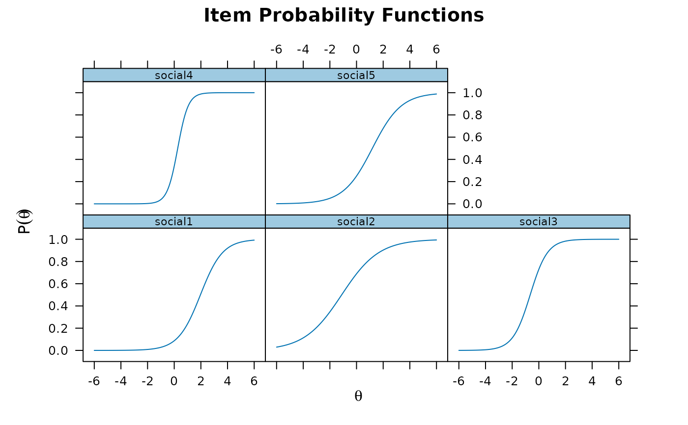

A 5-item data set analyzed by Bartholomew (1998). Data contains dichotomous responses (endorsement vs non-endorsement) from 1490 German respondents to five statements on perceptions of social life.
Bartholomew, D., J. (1998). Scaling unobservable constructs in social science. Journal of the Royal Statistical Society - Series C, 47, 1-13.
# \donttest{
# tabular format
data(SLF)
SLF
#> social1 social2 social3 social4 social5 freq
#> 1 0 0 0 0 0 156
#> 2 0 0 0 0 1 26
#> 3 0 0 0 1 0 14
#> 4 0 0 0 1 1 9
#> 5 0 0 1 0 0 127
#> 6 0 0 1 0 1 26
#> 7 0 0 1 1 0 66
#> 8 0 0 1 1 1 16
#> 9 0 1 0 0 0 174
#> 10 0 1 0 0 1 35
#> 11 0 1 0 1 0 36
#> 12 0 1 0 1 1 13
#> 13 0 1 1 0 0 208
#> 14 0 1 1 0 1 65
#> 15 0 1 1 1 0 195
#> 16 0 1 1 1 1 129
#> 17 1 0 0 0 0 8
#> 18 1 0 0 0 1 2
#> 19 1 0 0 1 0 1
#> 20 1 0 0 1 1 3
#> 21 1 0 1 0 0 4
#> 22 1 0 1 0 1 4
#> 23 1 0 1 1 0 18
#> 24 1 0 1 1 1 9
#> 25 1 1 0 0 0 8
#> 26 1 1 0 0 1 2
#> 27 1 1 0 1 0 5
#> 28 1 1 0 1 1 3
#> 29 1 1 1 0 0 19
#> 30 1 1 1 0 1 10
#> 31 1 1 1 1 0 31
#> 32 1 1 1 1 1 68
# full dataset
full <- expand.table(SLF)
itemstats(full)
#> $overall
#> N mean_total.score sd_total.score ave.r sd.r alpha
#> 1490 2.166 1.324 0.187 0.076 0.536
#>
#> $itemstats
#> N mean sd total.r total.r_if_rm alpha_if_rm
#> social1 1490 0.131 0.337 0.482 0.251 0.510
#> social2 1490 0.672 0.470 0.550 0.227 0.527
#> social3 1490 0.668 0.471 0.632 0.335 0.458
#> social4 1490 0.413 0.493 0.702 0.420 0.397
#> social5 1490 0.282 0.450 0.578 0.281 0.493
#>
#> $proportions
#> 0 1
#> social1 0.869 0.131
#> social2 0.328 0.672
#> social3 0.332 0.668
#> social4 0.587 0.413
#> social5 0.718 0.282
#>
mod <- mirt(full)
plot(mod, type = 'trace')

# }